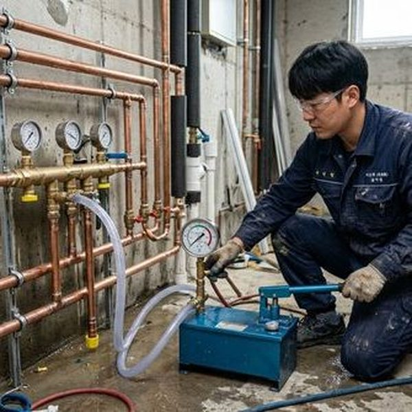
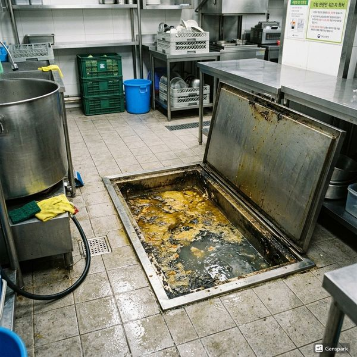
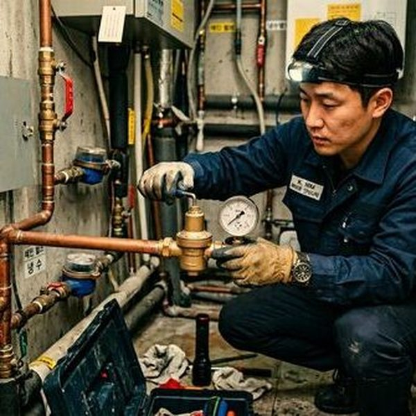

지하주차장 배수 문제가 발생하는 이유
지하주차장의 배수 문제는 크게 세 가지 원인에서 발생합니다. 첫째, 집수정(배수 피트)의 펌프 고장이나 용량 부족입니다. 호우 시 유입수량이 펌프 배수 능력을 초과하면 침수가 발생합니다. 둘째, 배수로(트렌치)와 배수구의 이물질 축적입니다. 차량에서 떨어진 흙, 모래, 기름 등이 배수구를 막아 물이 고입니다. 셋째, 지하수 유입입니다. 방수층이 노후되면 지하수가 벽체나 바닥 이음부를 통해 지속적으로 스며듭니다. 제우스시설관리는 관로탐지기와 고압세척기로 지하주차장 배수 시스템을 완벽하게 진단하고 복원합니다.

지하주차장 배수 시스템 유지관리
지하주차장 배수 시스템은 정기적인 유지관리가 핵심입니다. 집수정 펌프는 월 1회 시운전 점검하고, 이상 소음이나 진동이 있으면 즉시 정비합니다. 배수로 청소는 분기 1회 이상, 장마철 전에는 반드시 실시합니다. 배수구 덮개(그레이팅)를 들어내고 내부에 쌓인 토사와 기름때를 제거합니다. 고압세척으로 배수관 내부까지 청소하면 더욱 효과적입니다. 관리사무소에서 정기 관리 계약을 맺으면 비용을 절감하면서 체계적인 관리가 가능합니다. 제우스시설관리는 공동주택 배수 시스템 전문 관리 경험이 풍부하며, 긴급 상황 시 28분 내 출동합니다.

자주 묻는 질문
Q. 지하주차장 침수 시 보험 처리가 되나요?
A. 건물 화재보험의 수재 담보에 가입되어 있다면 침수 피해 보상이 가능합니다. 차량 피해는 자차보험으로 별도 처리해야 합니다.
Q. 배수펌프 교체 비용은 얼마인가요?
A. 펌프 용량에 따라 80만~300만원 수준이며, 듀얼 펌프 시스템으로 설치하면 고장 시에도 배수가 가능합니다.